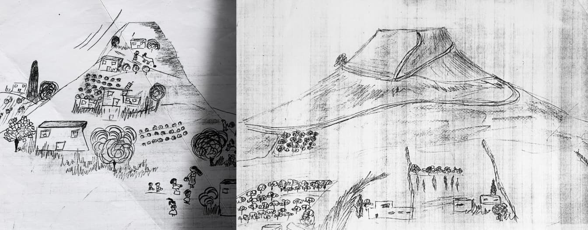
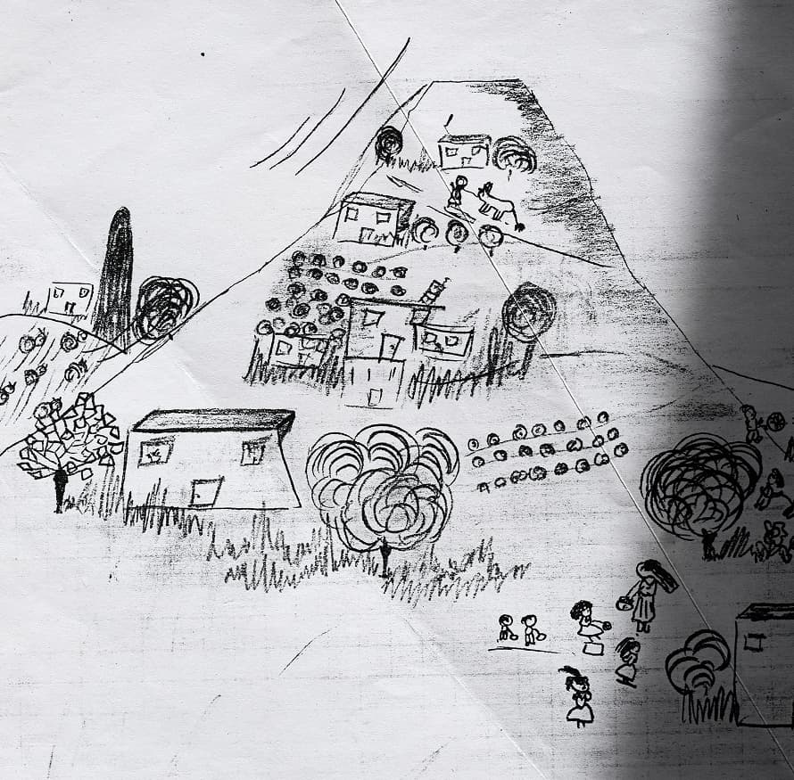
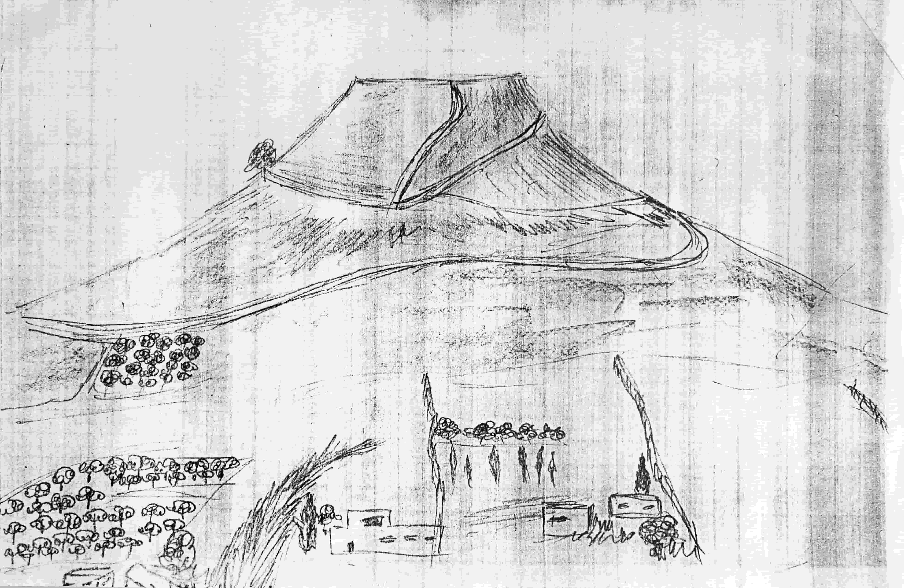

Первое мое интервью
Первое мое интервью на предмет работы устроил мне Илюша, сын Лины. Это было очень серьезное учреждение авиационной промышленности.
Дело было в декабре, а погода - летняя. Помню, была я в крепдешиновой блузке. Входим в лабораторию, русская речь, а на столе - маринованные маслята и бутылка. Ну прям, как у нас в 702 аудитории в день геолога. Ноябрь, декабрь в Израиле сезон грибов. Сабры не очень знакомы с грибной охотой, а для “русских” - раздолье.
В обеденный перерыв сводили меня в рабочую столовую. Сервировка, изобилие блюд - как на праздник. А на интервью я срезалась, путалась даже в своём родном уравнении.
Выйти замуж
В другой раз было у меня интервью в одной солидной компьютерной фирме, куда я поехала сама, а иврит мой на самом начальном уровне. Вышел ко мне молодой человек лет 35 с умным еврейским лицом. Предложил мне тест. Я на иврите ему отвечаю, что хочу попробовать. Вижу, он меняется в лице, отводит глаза, ужасно смущён, не знает, что предпринять. Я собираюсь и говорю на английском: “I want to try”. Смотрю, он в себя пришёл, явно полегчало ему.
Приезжаю домой, рассказываю Беате. Она меня переспрашивает: “Повтори, как ты ему сказала”. Беата смеётся: “Знаешь, что ты ему сказала? Ты сказала, что ты хочешь выйти замуж.” Оказывается вместо “попробовать” у меня получилось “замуж”.
Цветовые пятна
Соседи как-то спросили меня, почему я хожу за растительным маслом в дальний супер, а не в ближайший. В ближнем тоже самое масло и даже в ту же цену. И тут я понимаю, что я не только это масло не видела, а ещё и многие другие товары не видела. Вместо отдельных предметов на полках я вижу только цветовые пятна, не воспринимая, не различая предметов.
По всей видимости, мой, никому не высказанный, в том числе и самой себе , стресс вот таким образом проявил себя.
Постепенно цветовое панно превратилось в нормальные магазинные полки.
Ширут гидрологи
А вот история с моей первой работой. Я не работала уже больше года. Наверное я в свои 50 и с маленьким ребёнком могла бы получать пособие. Да ещё “по-чёрному” подрабатывать. Но ни я сама не хотела жить в такой атмосфере, ни тем более растить ребёнка в ожидании подачек и хитрожопости. И куда бы я ни отправляла своё резюме - везде получала отказ или вообще не получала никакого ответа.
Илюша с компанией обнаружили, что в Иерусалиме есть такая организация “Ширут гидрологи”. Им это казалось очень близким к кафедре гидрогеологии, на которой я работала в московском университете. Не помню, уж каким образом, но получила интервью. Со мной должен был говорить человек по должности аналогичной зам. директора по науке. Чтобы я не плутала по незнакомым закоулкам, договорились, что я буду ждать его на центральной автобусной станции и он меня оттуда заберёт.
Моим опознавательным знаком была большая синяя сумка через плечо. И вот хожу я по перрону и каждому вновь появившемуся тычу этой сумкой.
Время от времени я звоню в институт и на своём младенческом иврите говорю, что Бахмат назначил мне встречу. На самом деле, как потом выясняется, я говорю, что я назначила встречу Бахмату. Человек на том конце что-то говорит на иврите - я ничего не понимаю и продолжаю выхаживать с сумкой, тыкая ею в глаза прохожим, с решимостью ходить так хоть до завтра.
Дело происходит в августе 1991 года, За все 40 минут моего ожидания я не слышала ни одного русского слова. Я дождалась.
Мы очень хорошо поговорили, знания и опыт которые у меня были ему очень подходили и он направил меня к другому сотруднику. Я бы его назвала зам директора по административной части.
Если с первым мы говорили на смеси иврита, английского и русского (русский у него был такой, какой может быть у польского еврея 40 лет живущего в Израиле). То со вторым - сплошное счастье - на чистом русском языке.
В России он звался Саша, а здесь Шмуэль. Но, как оказалось в дальнейшем, радовалась я рано. Поначалу все выглядело очень хорошо. Я летала от счастья: работа прям то, чем я занималась в университете, да и зарплата неплохая.
Кроме того, министерство абсорбции приплачивало моему работодателю в течение 3 лет половину моей зарплаты, так называемая стипендия Шапиро, так что я была выгодным приобретением.
Саша при внешней доброжелательности все же не хочет меня брать на работу. Не помню что точно он мне говорил, но помню ЧТО я сказала:
До сих пор помню - помню даже своё внутреннее состояние, когда говорила это, уж очень не свойственно такое мне. Правда и случая для того прежде не было. Я сказала: “все решают эти задачи, а я решаю их лучше всех”. Ну прямо как головой в омут.
И он сдался. Стал заниматься моим оформлением. Был, как мне казалось, доброжелателен и уважителен. И вдруг звонит мне и довольно грубо говорит, что в министерстве нет моих бумаг на стипендию Шапиро и что я его обманула. Я была очень уязвляна не столько, тем что он не нашел моих бумаг, а его тоном и тем что он посмел назвать меня обманщицей. Почему то я была уверена, что бумаги найдутся. И в самом деле, Юля Ратнер ( активная, героическая отказница с многолетнем стажем) позвонила в секретариат и попросила девочек помочь мне. Бумаги конечно нашлись.
Последнее препятствие вроде бы преодолено и Саше/Шмуэлю ничего не остаётся, как заключить со мной контракт. И тут ждало меня ещё одно испытание. Вдруг Саша/Шмуэль говорит: “Галина, я Вам что то скажу, но Вы никому не говорите”. Ну, конечно я соглашаюсь, правда немного удивлена. Он продолжает: “Вы мне нравитесь, как женщина”.
Говорят, в критических ситуациях человек оказывается способным на что то большее, чем в обычной жизни. Я в ужасе. Принять не могу, а оттолкнуть - смерти подобно. Я, в отличие от моей мамы, человек не находчивый. А тут, не знаю кто мне помог, но выкрутилась я наилучшим образом. С небрежным видом, я произнесла: “Да я никому ещё счастья не приносила”. От этих моих слов аппетит у него, видно, пропал и разговор был забыт.
Маленькое поселение — большое испытание
Мне все говорили, что ездить из Реховота на работу в Иерусалим будет мне слишком тяжело. Одна из сотрудниц предложила мне свою помощь. Она жила в Текоа в 16 км к югу от Иерусалима. Ольга предложила нам 2 комнаты.
Нас не смущало совместное проживание с ней, да и цена была для нас приемлемой. Вот тут первый, кажется и единственный раз моя мама осторожно сказала: Может нам не стоило сюда приезжать. Было не очень понятно, что она имеет ввиду - Текоа или может быть Израиль.
Да и правда, было отчего задуматься. Я ведь даже предварительно не съездила посмотреть. Текоа - еврейское поселение, тогда ещё очень маленькое на небольшой горке среди арабских деревень. Из этих деревень ранним утром доносится голос муэдзина, многократно усиленный мощными звуковыми усилителями. Дом был ещё не достроен. Ни в одной комнате, ни в туалете, ни в ванной, ни на кухне не было дверей. Ступеньки к дому тоже не очень надежные. На участке перед домом строительный мусор.
Зима в тот год выдалась холодной, несколько раз даже выпадал снег. Маша в школе, я - на работе, там тепло. А мама целый день дома, в доме температура - 13 градусов. Но ни разу мама не пожаловалась. Уж как она справлялась, даже и не знаю. Оденется потеплее и за дела. Даже Ольге пыталась помочь, чем могла.
Со временем я поняла, что еврейское поселение на, так называемых территориях, не подходящее место для старых и малых.
Горы Текоа в рисунках Маши
  